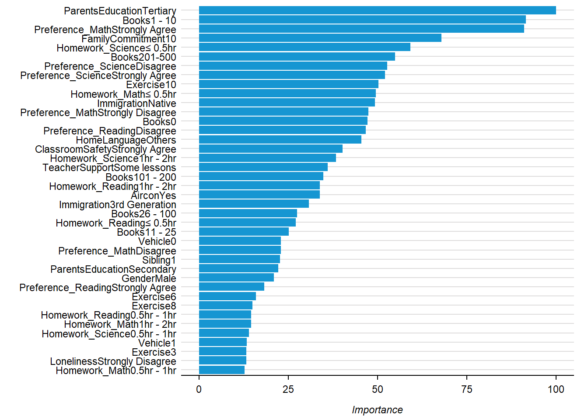
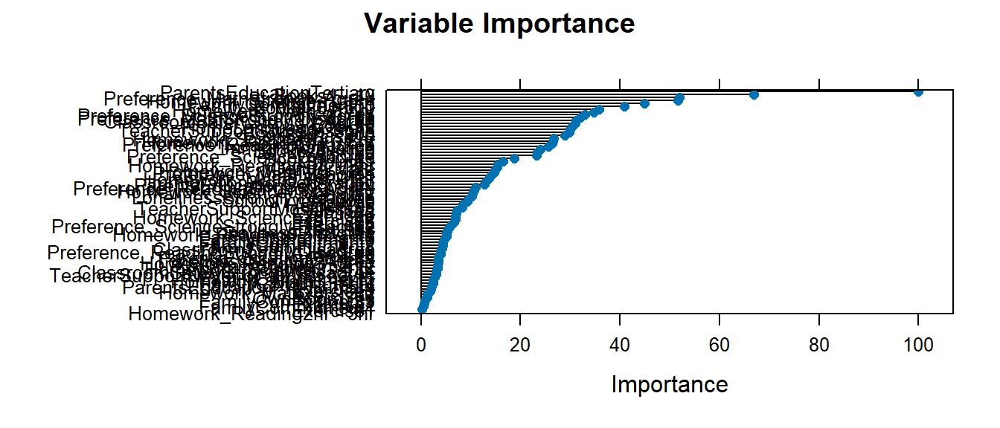
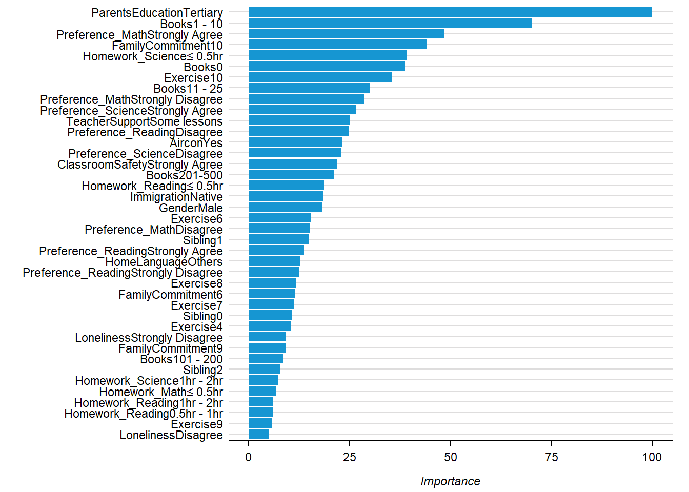

pacman::p_load(tidyverse,
ggplot2, patchwork, urbnthemes,
gtsummary,
ranger, rpart.plot, caret, tidymodels, gbm,
performance)Take-home Exercise 4: Prototyping Modules for Shiny Application
1 Overview
International large-scale assessments, such as PISA, provide structured and static data. With the goal of exploring which factors have a higher relevance in predicting student performance, this post proposes the use of multiple linear regression and random forest approach to detect and analyse factors linked to academic performance.
Specifically, this post details the steps, packages, prototypes, including the detailed breakdown of codes used for UI and Server in R Shiny as part of the model building module in preparation for the final Shiny app.
2 Loading Data and Packages
2.1 Packages
The packages used as part of this exercise includes:
| Package | Description |
|---|---|
| tidyverse | For data wrangling |
| ggplot2, patchwork, urbnthemes | For plots and setting a consistent theme throughout this exercise. |
| htmltools, reactable, gtsummary | For dynamic and static data tables |
| corrplot | For correlation matrix |
| caret, tidymodels | For packages relating to modeling, regression, and machine learning |
| performance | For assessment of regression models performance |
2.2 The PISA Survey Students Questionnaire
The code chunk below loads our dataset into R environment, in the form of a csv file created following minor data cleaning and wrangling documented here.
stu <- read_csv("data/stu_SG_rcd.csv")Rows: 6,606
Columns: 25
$ Loneliness <chr> "Disagree", "Disagree", "Disagree", NA, "Strongly D…
$ ClassroomSafety <chr> "Agree", "Strongly Agree", "Agree", "Agree", "Stron…
$ TeacherSupport <chr> "Most lesson", "Most lesson", "Most lesson", "Most …
$ Gender <chr> "Female", "Male", "Male", "Male", "Female", "Female…
$ Homework_Math <chr> "≤ 0.5hr", "1hr - 2hr", "0.5hr - 1hr", "1hr - 2hr",…
$ Homework_Reading <chr> "≤ 0.5hr", "0.5hr - 1hr", "1hr - 2hr", "≤ 0.5hr", "…
$ Homework_Science <chr> "0.5hr - 1hr", "1hr - 2hr", "1hr - 2hr", "0.5hr - 1…
$ SchoolType <chr> "Public", "Public", "Public", "Public", "Public", "…
$ ParentsEducation <chr> "Tertiary", "Post-Secondary", "Secondary", "Post-Se…
$ Immigration <chr> "Native", "Native", "Native", "Native", "Native", "…
$ HomeLanguage <chr> "English", "English", "Others", "Others", "English"…
$ Sibling <chr> "≥3", "≥3", "1", "≥3", "≥3", "2", "1", "1", "2", "≥…
$ Aircon <chr> "No", "Yes", "Yes", "No", "No", "Yes", "Yes", "Yes"…
$ Helper <chr> "No", "Yes", "No", "No", "No", "No", "No", "No", "Y…
$ Vehicle <chr> "1", "0", "1", "0", "1", "1", "1", "0", "2", "2", "…
$ Books <chr> ">500", "26 - 100", "26 - 100", "11 - 25", "1 - 10"…
$ Exercise <dbl> 1, 4, 2, 5, 9, 1, 2, 0, 3, 5, 1, 2, 5, 2, 4, 0, 2, …
$ OwnRoom <chr> "No", "Yes", "Yes", "No", "No", "No", "Yes", "Yes",…
$ FamilyCommitment <dbl> 10, 2, 0, 10, 5, 5, 7, 0, 0, 4, 2, 2, 10, 0, 10, 0,…
$ Preference_Math <chr> "Disagree", "Strongly Agree", "Agree", "Disagree", …
$ Preference_Reading <chr> "Agree", "Agree", "Disagree", "Agree", "Strongly Ag…
$ Preference_Science <chr> "Agree", "Agree", "Agree", "Agree", "Strongly Agree…
$ Math <dbl> 605.2533, 689.9528, 676.7768, 401.0528, 436.1151, 5…
$ Reading <dbl> 667.4296, 627.6078, 582.9252, 361.3969, 475.6763, 4…
$ Science <dbl> 639.7873, 672.0703, 660.0384, 343.6425, 479.2390, 4…3 Storyboard
The flowchart below details the features for this model building module.
flowchart TD
C[Building Predictive Model]-.->C1[Decision Tree]
C-.-> C2[Random Forest]
C-.-> C3[Gradient Boosting]
C1-.->F[3. Visual Model Diagnostics]
C2-.->F
F -->E[4. Statistical Model Evaluation]
E-->D[5. Variable Importance]
3.1 Draft Designs
At the initial stage of the model building module, users would be able customise various options for building 3 predictive models. We perform a detailed walkthrough of the interactivity and customisation features, including descriptions of the SHINY UI and Server in Sections 5-7.
In the subsequent parts of this section, we briefly outline the rationale behind visualisations and measurements.
3.2 Visual Model Diagnostic
After training the models, we can use it to predict scores for the test data we held back using predict(). Then we can compare these predictions to the actual values to evaluate how well (or not) the models are working. We can get a better indication by visualising a scatter plot that compares the predictions to the actual scores and residuals.
Predicted vs Actual: This is a scatter plot that helps you visualise the performance of a regression model. The x-axis represents the actual values, and the y-axis represents the predicted values. Ideally, if the predictions are perfect, the points will lie along a straight line with a slope of 1. We’ll also overlay a trend line to get a general sense for how well the predicted values align with the true values.
Residuals vs Actual: A scatter plot of residuals (vertical axis) in function of the observed (horizontal axis) values of the dependent variable. For a “perfect” predictive model, we would expect the horizontal line at zero. For a “good” model, we would like to see a symmetric scatter of points around the horizontal line at zero, indicating random deviations of predictions from the observed values.
3.3 Statistical Model Evaluation
We can quantify the residuals by calculating a number of commonly used evaluation metrics, with a focus on the following:
Root Mean Square Error (RMSE): The square root of the MSE. This yields an absolute metric in the same unit as the response variable (in this case, scores). The smaller the value, the better the model (in a simplistic sense, it represents the average scores by which the predictions are wrong).
\(R^2\): describes the strength of a model fit. In essence, this metric represents how much of the variance between predicted and actual label values the model is able to explain. The regular \(R^2\) is a biased estimate of the amount of variability explained by the model when applied to model with more than one predictor. To get a better estimate, we use the \(adjusted\ R^2\). The best fit is the one that maximises \(R^2\) or \(adjusted\ R^2\).
Mean Absolute Error (MAE): It is measured as the average absolute difference between the predicted values and the actual values and is used to assess the effectiveness of a regression model.
formals() function returns the argument list of the function specified. This can be used in the sidebar to display the options for user selection.
eval(formals(cor)$method)[1] "pearson" "kendall" "spearman"4 Prelude
The general outline of a predictive analysis is as follows:
- Test-train split the available data using
createDataPartition() - Specify possible tuning parameters for method using
expand.grid() - Use resampling to find the “best model” by choosing the values of the tuning parameters
trainControl()will specify the resampling schemetrain()is the workhorse of caret. It takes the following information then trains (tunes) the requested model:form, a formula, such asy ~ .- This specifies the response and which predictors (or transformations of) should be used.
data, the data used for trainingtrControlwhich specifies the resampling scheme, that is, how cross-validation should be performed to find the best values of the tuning parameterspreProcesswhich allows for specification of data pre-processing such as centering and scalingmethod, a statistical learning method from a long list of availible models
tuneGridwhich specifies the tuning parameters to train over
- Use chosen model to make predictions using
predict()
4.1 Data Preparation
The goal of training the model is to find a function that performs some kind of calculation to the \(x\) values (i.e. independent variables) that produces the result \(y\) (i.e. dependent variable). We do this by applying a machine learning algorithm that tries to fit the \(x\) values to a calculation that produces \(y\) reasonably accurately for all of the cases in the training dataset.
To train the model, we start with a data sample containing the independent/explanatory variables as well as known values for the subject scores. We’ll then split this data sample into two subsets:
A training dataset to which we’ll apply an algorithm that determines a function encapsulating the relationship between the independent variables and the known \(y\) values.
A test dataset that we can use to evaluate the model by using it to generate predictions for the label and comparing them to the actual known \(y\) values.
## Data for Model Building ##
# Remove missing cases & convert variables to factor datatype our dataset
stu <- stu %>%
na.omit() %>%
mutate(across(1:22, as.factor))
data <- stu %>%
dplyr::select(c(1:22, "Math")) #<< input$var, input$bm_target to change according to user selection# Set the seed before splitting the data
set.seed(1234)
# Split the data into training and test
index <- createDataPartition(data$Math, #<< input$bm_target
p = 0.8, #<< input$rf_partition
list = FALSE)
traindata <- data[index, ]
testdata <- data[-index, ]| Function/Object | Feature | UI | Server |
|---|---|---|---|
| data for model building | Select subject | Within sidebarPanel(): selectInput( |
mb_data <- eventReactive(input$mb_action, {stu %>% select(input$mb_vars | mb_target)}) |
| Checkbox for variable selection; sortable package allows drag-and-drop to order variables | Within sidebarPanel(): sortableCheckboxGroupInput( |
mb_data <- eventReactive(input$mb_action, {stu %>% select(input$mb_vars | mb_target)}) |
|
| Select partition size | Within mainPanel() > tabsetPanel() > sliderInput( inputId = “mb_partition”, label = “Train-Test Partition Ratio:”, min = 0.5, max = 0.95, value = c(0.8))) |
mb_index <- eventReactive( mb_traindata <- eventReactive( mb_testdata <- eventReactive( |
5 Decision Tree
5.1 The Model’s First Run
## Specifying training choices ##
# Resampling Options
dt_fitcontrol <- trainControl(method = "cv", # input$dt_resamplingmethod
number = 10, # input$dt_resamplecnt
repeats = NA) # input$dt_repeatsmethod: Refers to the resampling method, such asboot,cv(cross validation),repeatedcvnumber: K-fold, the number of times resampling should be done for methods that require resample egcvandboostrepeats: Applies only to repeated K-fold cross-validation. Suppose thatmethod = "repeatedcv",number = 10andrepeats = 3, then three separate 10-fold cross-validations are used as the resampling scheme.
The decision tree has two adjustable parameters: complexity parameter (CP) and tune length (TL). CP tells the algorithm to stop when the measure does not improve by this factor. TL tells how many instances to use for training. I’ll let the model look for the best CP tuning parameter with tuneLength to get close using the initial model, then fine-tune with tuneGrid at a later stage.
set.seed(1234)
dtmodel <- train(Math ~ .,
data = traindata,
method = "rpart",
tuneLength = 4, #input$dt_tunelength
trControl = dt_fitcontrol
)
dtmodelCART
4128 samples
22 predictor
No pre-processing
Resampling: Cross-Validated (10 fold)
Summary of sample sizes: 3716, 3715, 3715, 3715, 3714, 3715, ...
Resampling results across tuning parameters:
cp RMSE Rsquared MAE
0.01850079 93.47881 0.10840404 75.55322
0.02168293 94.03535 0.09713273 76.17916
0.02170645 94.03535 0.09713273 76.17916
0.07902291 97.76751 0.05523462 79.69776
RMSE was used to select the optimal model using the smallest value.
The final value used for the model was cp = 0.01850079.rpart.plot(dtmodel$finalModel,
box.palette="GnBu",
branch.lty=3,
shadow.col="gray",
nn=TRUE)The boxes show the node predicted value (mean) and the proportion of observations that are in the node (or child nodes).
| Function | Feature | UI | Server |
|---|---|---|---|
| trainControl() | Select resampling method, resampling count and repeat. | numericInput(inputId = “dt_cvkfold_number”, numericInput(inputId = “dt_repeatkfold_number”, numericInput(inputId = “dt_repeatkfold_repeat”, label = “Number of Repeats:”, |
Within mainPanel() > tabsetPanel() > For Cross Validation For Repeated Cross Validation dt_repeatnum <- eventReactive( |
| train() | Set initial tune length | numericInput(inputId = “dt_tunelength”, label = “Set Initial Tune Length:”, min = 2, max = 10, value = 4))), |
dtmodel <- eventReactive( train(Math ~ ., data = mb_traindata, method = “rpart”, tuneLength = input$dt_tunelength trControl = dt_fitcontrol ) |
| rpart.plotO | Show plots when selections are completed and ‘Build Model’ option is triggered. | plotOutput(“dt_rpartplot”) | dt_rpartplot <- eventReactive( input$mb_action, { rpart.plot() }) output$dt_rpartplot <- renderPlot({ dt_rpartplot }) |
5.2 Visual Model Diagnostics
predict_dt <- bind_cols(
Actual = testdata$Math,
Predicted = predict(dtmodel, newdata = testdata),
Residuals = predict(dtmodel, newdata = testdata) - testdata$Math
)dt_predvsactual <-
ggplot(data = predict_dt,
aes(x = Actual, y = Predicted)) +
geom_point(alpha = 0.2, color = "grey40") +
geom_smooth(method = "loess", formula = "y ~ x", color="#dfb2e9") +
geom_abline(intercept = 0, slope = 1, linetype = 2, color = "#20948b", size = 0.8) +
labs(title = "Predicted vs Actual") +
theme(plot.background=element_rect(fill="#f5f5f5",colour="#f5f5f5"))
dt_residvsactual <-
ggplot(data = predict_dt,
aes(x = Actual, y = Residuals)) +
geom_point(alpha = 0.2, color = "grey40") +
geom_smooth(method = "loess", formula = "y ~ x", color="#dfb2e9") +
geom_hline(yintercept = 0, linetype = 2, color = "#20948b", size = 0.8) +
labs(title = "Residuals vs Predicted") +
theme(plot.background=element_rect(fill="#f5f5f5",colour="#f5f5f5"))
dt_predvsactual + dt_residvsactual +
plot_layout(guides = "collect") +
plot_layout(widths=c(1,1))| Function | Feature | UI | Server |
|---|---|---|---|
| predict() | Option to allow users to choose if they want to visualise results using train or test data. Predict data when selections are completed and ‘Build Model’ option is triggered. |
radioButtons( inputId = “traintest”, label = “Display Results Using:”, choices = c(“Train”, “Test”), selected = “Test”)) |
predictdt_model <- eventReactive( input$mb_action, { predict(dtmodel(), newdata = if (input$traintest == “Test”, { testdata() }, else { traindata() }) }) |
| bind_cols | Creating a new dataframe containing actual, predicted, and residuals for visualisation. | - | predict_dt <- eventReactive( input$mb_action, { Actual = testdata()$input$mb_target, Predicted = predictdt_model(), Residuals = predictdt_model() - testdata()$input$mb_target) }) |
| Diagnostic plots | Refresh plots when selections are completed and ‘Build Model’ option is triggered. | tabbox() > tabPanel() > plotOutput(“dt_predvsactual_”) tabPanel() > plotOutput(“dt_residvsactual_”) |
Plot Predicted vs Actual Plot Residuals vs Actual dt_residvsactual <- eventReactive( |
5.3 Statistical Model Evaluation
dt_rmse <- RMSE(pred = predict_dt$Predicted, obs = predict_dt$Actual)
dt_rsq <- R2(pred = predict_dt$Predicted, obs = predict_dt$Actual)
dt_mae <- MAE(pred = predict_dt$Predicted, obs = predict_dt$Actual)
dt_rmse[1] 90.52466dt_rsq[1] 0.1319645dt_mae[1] 73.3128| Function | Function | UI | Server |
| predict() | Test data results to be updated when response and explanatory variables are selected and ‘Build Model’ is clicked. | Calculate RMSE predict_dt <- eventReactive( predict_rf_rmse <- eventReactive( |
|
| RMSE() | Metrics displayed to be updated when response and explanatory variables are selected and ‘Build Model’ is clicked. | Within mainPanel(): fluidRow( div( |
Display results, eg RMSE rf_display_RMSE = function(){ observeEvent(input$mb_action, dt_display_RMSE()) |
5.4 Parameter Tuning
5.4.1 Complexity Parameter
Upon receiving the results of our initial decision tree model, user can further refine the model based on the complexity parameter plot. Diagnosis plots, tree visualisation, statistical results should be updated based on the revised model.
To prune a tree, we want the cp value (with a simpler tree) that minimises the xerror.
dtmodel$bestTune cp
1 0.01850079dt_cp_plot <- plot(dtmodel)
dt_cp_plot
| Function | Feature | UI | Server |
|---|---|---|---|
| rpart.plotO | Show plots when selections are completed and ‘Build Model’ option is triggered. | plotOutput(“dt_cp_plot_”) | dt_cp_plot<- eventReactive( input$mb_action, { plot(dtmodel()) }) output$dt_cp_plot_<- renderPlot({ dt_cp_plot() }) |
5.4.2 Refreshing Results
set.seed(1234)
dtmodel_pruned <- train(Math ~ .,
data = traindata,
method = "rpart",
tuneGrid = expand.grid(cp = seq(from = 0.01, to = 0.02, by = 0.001)), #input$dt_cp
trControl = dt_fitcontrol
)rpart.plot(dtmodel_pruned$finalModel,
box.palette="GnBu",
branch.lty=3,
shadow.col="gray",
nn=TRUE)
predict_dtpruned <- bind_cols(
Actual = testdata$Math,
Predicted = predict(dtmodel_pruned, newdata = testdata),
Residuals = predict(dtmodel_pruned, newdata = testdata) - testdata$Math
)
dtpruned_rmse <- RMSE(pred = predict_dtpruned$Predicted, obs = predict_dtpruned$Actual)
dtpruned_rsq <- R2(pred = predict_dtpruned$Predicted, obs = predict_dtpruned$Actual)
dtpruned_mae <- MAE(pred = predict_dtpruned$Predicted, obs = predict_dtpruned$Actual)
dtpruned_rmse[1] 88.95871dtpruned_rsq[1] 0.1620932dtpruned_mae[1] 72.379356 Random Forest
6.1 The Model
## Specifying training choices ##
# Set seed
set.seed(1234)
# Resampling Options
rf_fitcontrol <- trainControl(method = "cv", # input$rf_resamplingmethod
number = 5, # input$rf_resamplecnt
repeats = NA) # input$rf_repeatsThis model has 3 tuning parameters:
mtry: Randomly Selected Predictors (type: integer)trees: Trees (type: integer, default: 500L)min_n: Minimal Node Size (type: integer)
## Model Parameters ##
tgrid <- expand.grid(
mtry = sqrt(ncol(traindata)),
splitrule = "variance", # input$rf_splitrule: "variance", "extratrees", "maxstat" or "beta" with default "variance" for regression
min.node.size = 5 # Default 5 for regression
)rfmodel <- train(form = Math ~ .,
data = traindata,
method = "ranger",
trControl = rf_fitcontrol,
num.trees = 50, # input$treenum
importance = "permutation", # input$rf_varimpmode: none, impurity, permutation
tuneGrid = tgrid
)
rfmodelRandom Forest
4128 samples
22 predictor
No pre-processing
Resampling: Cross-Validated (5 fold)
Summary of sample sizes: 3302, 3302, 3302, 3303, 3303
Resampling results:
RMSE Rsquared MAE
81.4222 0.363924 65.59421
Tuning parameter 'mtry' was held constant at a value of 4.795832
Tuning parameter 'splitrule' was held constant at a value of variance
Tuning parameter 'min.node.size' was held constant at a value of 5| Function | Feature | UI | Server |
|---|---|---|---|
| trainControl() | Select resampling method, resampling count and repeat. | numericInput(inputId = “rf_cvkfold_number”, numericInput(inputId = “rf_repeatkfold_number”, numericInput(inputId = “rf_repeatkfold_repeat”, label = “Number of Repeats:”, |
Within mainPanel() > tabsetPanel() > For Cross Validation For Repeated Cross Validation rf_repeatnum <- eventReactive( |
| expand.grid() | Select split rule | selectInput(inputId = “rf_splitrule_”, label = “Select Split Rule:”, choices = c(“Variance” = “variance”, “Extra Trees” = “extratrees”, “Max Stat” = “maxstat”) |
tgrid <- eventReaction(input$mb_action, { expand.grid( mtry = sqrt(ncol(traindata)), splitrule = “variance”. min.node.size = 5)} |
| train() | Select number of trees and variable importance | sliderInput(inputId = “rf_tree_range_”, radioButtons(inputId = “rf_varimpmode_”, |
rfmodel <- eventReactive( input$mb_action, { train(form = Math ~ ., data = traindata(), method = “ranger”, trControl = fitcontrol(), num.trees = input$rf_tree_range, importance = input$rf_varimpmode, tuneGrid = tgrid()) }) |
6.2 Visual Model Diagnostic
rfmodel$bestTune mtry splitrule min.node.size
1 4.795832 variance 5predict_rf <- bind_cols(
Actual = testdata$Math,
Predicted = predict(rfmodel, newdata = testdata),
Residuals = predict(rfmodel, newdata = testdata) - testdata$Math
)rf_predvsactual <-
ggplot(data = predict_rf,
aes(x = Actual, y = Predicted)) +
geom_point(alpha = 0.2, color = "grey40") +
geom_smooth(method = "loess", formula = "y ~ x", color="#dfb2e9") +
geom_abline(intercept = 0, slope = 1, linetype = 2, color = "#20948b", size = 0.8) +
labs(title = "Predicted vs Actual") +
theme(plot.background=element_rect(fill="#f5f5f5",colour="#f5f5f5"))
rf_residvsactual <-
ggplot(data = predict_rf,
aes(x = Actual, y = Residuals)) +
geom_point(alpha = 0.2, color = "grey40") +
geom_smooth(method = "loess", formula = "y ~ x", color="#dfb2e9") +
geom_hline(yintercept = 0, linetype = 2, color = "#20948b", size = 0.8) +
labs(title = "Residuals vs Predicted") +
theme(plot.background=element_rect(fill="#f5f5f5",colour="#f5f5f5"))
rf_predvsactual + rf_residvsactual +
plot_layout(guides = "collect") +
plot_layout(widths=c(1,1))
6.3 Statistical Model Evaluation
rf_rmse <- RMSE(pred = predict_rf$Predicted, obs = predict_rf$Actual)
rf_rsq <- R2(pred = predict_rf$Predicted, obs = predict_rf$Actual)
rf_mae <- MAE(pred = predict_rf$Predicted, obs = predict_rf$Actual)
rf_rmse[1] 80.13941rf_rsq[1] 0.3483527rf_mae[1] 64.938476.4 Variable Importance
plot(varImp(rfmodel))
#rf_varimp <- importance(rfmodel) %>%
# as.data.frame() %>%
# rownames_to_column() %>%
# rename("Variable" = rowname) #bar_chart <- function(label, width = "100%", height = "1rem", fill = "#73b2c4", background = "#f5f5f5") {
# bar <- div(style = list(background = fill, width = width, height = height))
# chart <- div(style = list(flexGrow = 1, marginLeft = "0.5rem", background = "#f5f5f5"), bar)
# div(style = list(display = "flex", alignItems = "center"), label, chart)
#}
#tab_varimp <-
# reactable(data = rf_varimp,
#
# columns = list(
# `%IncMSE` = colDef(
# name = "% Increase in Mean Square Error",
# align = 'left',
# cell = function (value) {
# width <- paste0(value, "%")
# bar_chart(round(value,2), width = width)
# }),
# IncNodePurity = colDef(
# name = "Increase in Node Purity",
# align = 'left',
# cell = function (value) {
# width <- paste0(value/ max(rf_varimp$IncNodePurity) *100, "%")
# bar_chart(format(as.numeric(value), nsmall = 0, big.mark=","), width = width, fill = "#f27279", background = "#f5f5f5")
# })
# ))
#tab_varimp| Function | Feature | UI | Server |
|---|---|---|---|
| rf_varimp & reactable | Plots to be updated when response and explanatory variables are selected and ‘Build Model’ is clicked. | Within sidebarPanel(): reactableOutput(“tab_varimp”) |
rf_varimp <- eventReactive( output$tab_varimp <- renderReactable({ |
7 Gradient Boosting
7.1 The Model
## Specifying training choices ##
# Resampling Options
gb_fitcontrol <- trainControl(method = "cv", # input$gb_resamplingmethod -
number = 5, # input$gb_resamplecnt
repeats = NA) # input$gb_repeats
# Tuning Grid
gbm_grid = expand.grid(interaction.depth = c(1:3),
n.trees = (1:30) * 10,
shrinkage = c(0.01,0.05,0.1),
n.minobsinnode = 20)gbm has the following tuneable hyperparameters:
n.trees: number of boosting iterationsnteraction.depth: maximum tree depthshrinkage: the learning rate or shrinkage parameter -n.minobsinnode: minimum terminal node size
set.seed(1234)
gbmodel <- train(Math ~ .,
data = traindata,
trControl = gb_fitcontrol,
method = "gbm",
tuneLength = 5,
verbose = FALSE,
tuneGrid = gbm_grid)
gbmodel Stochastic Gradient Boosting
4128 samples
22 predictor
No pre-processing
Resampling: Cross-Validated (5 fold)
Summary of sample sizes: 3302, 3302, 3302, 3303, 3303
Resampling results across tuning parameters:
shrinkage interaction.depth n.trees RMSE Rsquared MAE
0.01 1 10 98.07437 0.08807327 80.10251
0.01 1 20 97.47337 0.09837644 79.60063
0.01 1 30 96.95464 0.11240227 79.15383
0.01 1 40 96.47760 0.12387731 78.74312
0.01 1 50 96.05209 0.12941446 78.37400
0.01 1 60 95.66458 0.13854867 78.03350
0.01 1 70 95.27882 0.14782104 77.70261
0.01 1 80 94.91735 0.15469400 77.40343
0.01 1 90 94.57435 0.16277897 77.10424
0.01 1 100 94.25871 0.17163798 76.83391
0.01 1 110 93.94660 0.17928220 76.56867
0.01 1 120 93.63760 0.18580648 76.31046
0.01 1 130 93.34836 0.19275638 76.06107
0.01 1 140 93.07684 0.19898002 75.82486
0.01 1 150 92.81228 0.20337459 75.58922
0.01 1 160 92.54999 0.20790547 75.37088
0.01 1 170 92.29821 0.21127670 75.15427
0.01 1 180 92.05088 0.21552821 74.94150
0.01 1 190 91.80570 0.21870589 74.72731
0.01 1 200 91.57332 0.22275672 74.52781
0.01 1 210 91.34174 0.22665841 74.33075
0.01 1 220 91.12777 0.23003506 74.14185
0.01 1 230 90.90290 0.23440175 73.96480
0.01 1 240 90.68914 0.23788453 73.78525
0.01 1 250 90.48454 0.24116808 73.61419
0.01 1 260 90.28870 0.24445253 73.44199
0.01 1 270 90.09323 0.24722753 73.26827
0.01 1 280 89.89734 0.25062649 73.10342
0.01 1 290 89.70812 0.25332527 72.94930
0.01 1 300 89.51855 0.25622314 72.78415
0.01 2 10 97.85408 0.12506935 79.92329
0.01 2 20 97.03806 0.13678664 79.24364
0.01 2 30 96.29675 0.15368410 78.61501
0.01 2 40 95.60733 0.16195956 78.01551
0.01 2 50 94.96305 0.17388729 77.45499
0.01 2 60 94.36754 0.18596794 76.93899
0.01 2 70 93.80114 0.19521061 76.44077
0.01 2 80 93.26322 0.20580554 75.97575
0.01 2 90 92.75095 0.21486261 75.53792
0.01 2 100 92.27297 0.22078182 75.11798
0.01 2 110 91.80668 0.22982514 74.72519
0.01 2 120 91.38660 0.23609634 74.36417
0.01 2 130 90.97806 0.24282204 74.01753
0.01 2 140 90.57978 0.24950864 73.67478
0.01 2 150 90.20610 0.25581321 73.35255
0.01 2 160 89.82500 0.26164640 73.02039
0.01 2 170 89.47598 0.26616059 72.72208
0.01 2 180 89.14603 0.27126257 72.43282
0.01 2 190 88.80890 0.27465231 72.14420
0.01 2 200 88.48956 0.27919360 71.87116
0.01 2 210 88.18930 0.28253957 71.60932
0.01 2 220 87.88918 0.28645385 71.34393
0.01 2 230 87.60511 0.28989493 71.08759
0.01 2 240 87.31776 0.29384077 70.83851
0.01 2 250 87.03824 0.29753661 70.59798
0.01 2 260 86.76807 0.30095767 70.35736
0.01 2 270 86.53175 0.30319152 70.14746
0.01 2 280 86.27476 0.30638862 69.93033
0.01 2 290 86.04242 0.30874301 69.73613
0.01 2 300 85.80870 0.31149532 69.53281
0.01 3 10 97.65289 0.14960096 79.74603
0.01 3 20 96.64265 0.16807110 78.89666
0.01 3 30 95.73026 0.18150324 78.11568
0.01 3 40 94.88177 0.19382676 77.39182
0.01 3 50 94.09136 0.20645447 76.70890
0.01 3 60 93.35374 0.21779972 76.08925
0.01 3 70 92.65442 0.22870970 75.48126
0.01 3 80 91.99956 0.23804060 74.91808
0.01 3 90 91.42811 0.24615966 74.41347
0.01 3 100 90.83450 0.25505722 73.91413
0.01 3 110 90.29643 0.26304858 73.45809
0.01 3 120 89.77997 0.26903502 73.00959
0.01 3 130 89.29077 0.27534481 72.58005
0.01 3 140 88.84377 0.28160966 72.18900
0.01 3 150 88.39183 0.28703274 71.78884
0.01 3 160 87.98785 0.29089402 71.43089
0.01 3 170 87.60693 0.29500983 71.10154
0.01 3 180 87.22942 0.29877495 70.76656
0.01 3 190 86.87568 0.30252972 70.46417
0.01 3 200 86.54159 0.30535605 70.17978
0.01 3 210 86.20927 0.30891773 69.89784
0.01 3 220 85.91032 0.31122926 69.63923
0.01 3 230 85.59678 0.31463461 69.37184
0.01 3 240 85.30758 0.31729579 69.11501
0.01 3 250 85.03869 0.32030848 68.87883
0.01 3 260 84.78236 0.32254791 68.64805
0.01 3 270 84.50046 0.32573321 68.41538
0.01 3 280 84.24296 0.32856029 68.19304
0.01 3 290 84.00417 0.33091240 67.98462
0.01 3 300 83.76684 0.33323781 67.78292
0.05 1 10 95.97882 0.13571032 78.32889
0.05 1 20 94.18100 0.16578059 76.75062
0.05 1 30 92.73170 0.20032480 75.52777
0.05 1 40 91.50834 0.22011376 74.46553
0.05 1 50 90.39323 0.24003429 73.50423
0.05 1 60 89.41020 0.25730554 72.67480
0.05 1 70 88.53850 0.26952613 71.93411
0.05 1 80 87.75038 0.27847170 71.22353
0.05 1 90 87.00229 0.28996618 70.57505
0.05 1 100 86.35322 0.29639436 69.99980
0.05 1 110 85.80306 0.30077372 69.53564
0.05 1 120 85.24639 0.30800467 69.02923
0.05 1 130 84.75909 0.31194020 68.59600
0.05 1 140 84.33724 0.31652272 68.21635
0.05 1 150 83.93929 0.31943121 67.85140
0.05 1 160 83.57027 0.32443001 67.50888
0.05 1 170 83.22041 0.32833700 67.18428
0.05 1 180 82.89057 0.33171106 66.89517
0.05 1 190 82.56585 0.33611445 66.63971
0.05 1 200 82.27697 0.33912891 66.36940
0.05 1 210 82.00223 0.34253855 66.13702
0.05 1 220 81.73293 0.34646780 65.90660
0.05 1 230 81.45004 0.35020681 65.65595
0.05 1 240 81.24370 0.35221571 65.46808
0.05 1 250 81.00020 0.35500218 65.25591
0.05 1 260 80.77792 0.35717237 65.06977
0.05 1 270 80.56683 0.35985758 64.87200
0.05 1 280 80.38259 0.36152481 64.70732
0.05 1 290 80.17659 0.36374485 64.51273
0.05 1 300 79.98499 0.36618056 64.35458
0.05 2 10 94.95278 0.16698885 77.41967
0.05 2 20 92.27729 0.21402108 75.11895
0.05 2 30 90.20381 0.24842161 73.34509
0.05 2 40 88.47204 0.27347481 71.84796
0.05 2 50 86.95989 0.29655274 70.53147
0.05 2 60 85.72351 0.30989220 69.46308
0.05 2 70 84.70950 0.31945543 68.57755
0.05 2 80 83.80031 0.32943810 67.74830
0.05 2 90 83.02953 0.33709703 67.07857
0.05 2 100 82.33278 0.34489168 66.47121
0.05 2 110 81.76843 0.34956210 65.93273
0.05 2 120 81.21519 0.35581867 65.45524
0.05 2 130 80.69198 0.36218344 65.00392
0.05 2 140 80.24044 0.36708752 64.59499
0.05 2 150 79.84892 0.37101997 64.23833
0.05 2 160 79.49319 0.37483541 63.91021
0.05 2 170 79.15312 0.37809736 63.59861
0.05 2 180 78.88087 0.38081188 63.34291
0.05 2 190 78.60422 0.38391909 63.12938
0.05 2 200 78.34730 0.38637147 62.89873
0.05 2 210 78.10883 0.38890434 62.68628
0.05 2 220 77.91352 0.39053235 62.52633
0.05 2 230 77.73878 0.39187175 62.35417
0.05 2 240 77.53966 0.39428180 62.16204
0.05 2 250 77.40506 0.39535889 62.02569
0.05 2 260 77.27961 0.39647647 61.91770
0.05 2 270 77.14085 0.39785577 61.79482
0.05 2 280 76.98501 0.39975684 61.64927
0.05 2 290 76.88416 0.40069247 61.56208
0.05 2 300 76.74610 0.40226666 61.43407
0.05 3 10 94.01492 0.19872389 76.68482
0.05 3 20 90.82915 0.25180426 73.88158
0.05 3 30 88.44588 0.28005833 71.78434
0.05 3 40 86.43782 0.30406597 70.09591
0.05 3 50 84.88794 0.31945854 68.73829
0.05 3 60 83.64186 0.33267504 67.66038
0.05 3 70 82.59737 0.34413926 66.73941
0.05 3 80 81.74714 0.35269819 65.98383
0.05 3 90 80.98226 0.36046713 65.30144
0.05 3 100 80.30055 0.36800864 64.69420
0.05 3 110 79.76705 0.37331882 64.18151
0.05 3 120 79.29949 0.37777282 63.75388
0.05 3 130 78.85565 0.38191169 63.36995
0.05 3 140 78.45196 0.38575748 63.00638
0.05 3 150 78.10554 0.38967263 62.69749
0.05 3 160 77.81387 0.39250582 62.40214
0.05 3 170 77.54240 0.39519184 62.16754
0.05 3 180 77.35331 0.39673575 61.97162
0.05 3 190 77.12768 0.39897681 61.76505
0.05 3 200 76.89778 0.40163817 61.59683
0.05 3 210 76.71475 0.40352904 61.43454
0.05 3 220 76.55980 0.40501194 61.28956
0.05 3 230 76.46657 0.40572905 61.18810
0.05 3 240 76.41666 0.40578754 61.12262
0.05 3 250 76.31605 0.40676328 61.01621
0.05 3 260 76.24119 0.40761051 60.93768
0.05 3 270 76.14560 0.40873535 60.85589
0.05 3 280 76.07823 0.40940361 60.78782
0.05 3 290 76.00919 0.41015805 60.73399
0.05 3 300 75.96494 0.41063121 60.68277
0.10 1 10 94.24137 0.17152272 76.84841
0.10 1 20 91.48856 0.22205615 74.51657
0.10 1 30 89.46812 0.25250672 72.73112
0.10 1 40 87.73580 0.28147122 71.17974
0.10 1 50 86.36685 0.29319174 70.01463
0.10 1 60 85.27466 0.30390353 69.06852
0.10 1 70 84.30898 0.31452875 68.19493
0.10 1 80 83.53196 0.32372634 67.51371
0.10 1 90 82.83092 0.33156668 66.89783
0.10 1 100 82.22985 0.33787256 66.34362
0.10 1 110 81.68324 0.34540571 65.86358
0.10 1 120 81.18066 0.35228088 65.42467
0.10 1 130 80.72093 0.35742987 65.00676
0.10 1 140 80.32755 0.36103060 64.66083
0.10 1 150 79.97723 0.36522667 64.34163
0.10 1 160 79.61847 0.36963144 64.04553
0.10 1 170 79.29837 0.37323486 63.78171
0.10 1 180 78.94606 0.37771138 63.46961
0.10 1 190 78.67907 0.38021031 63.24651
0.10 1 200 78.40913 0.38326301 62.99866
0.10 1 210 78.26306 0.38428988 62.86045
0.10 1 220 78.06412 0.38595601 62.68695
0.10 1 230 77.85685 0.38821266 62.49034
0.10 1 240 77.68196 0.38995929 62.34230
0.10 1 250 77.54713 0.39139327 62.20854
0.10 1 260 77.38875 0.39327551 62.05736
0.10 1 270 77.26407 0.39431559 61.96480
0.10 1 280 77.09994 0.39640931 61.83475
0.10 1 290 76.93714 0.39844026 61.71628
0.10 1 300 76.85006 0.39920562 61.61207
0.10 2 10 92.32949 0.20237222 75.14618
0.10 2 20 88.44999 0.26630912 71.74947
0.10 2 30 85.70067 0.30105732 69.35750
0.10 2 40 83.75614 0.32514332 67.68092
0.10 2 50 82.44245 0.33786786 66.48371
0.10 2 60 81.27957 0.35163030 65.47904
0.10 2 70 80.32363 0.36169034 64.52802
0.10 2 80 79.56126 0.37142500 63.86437
0.10 2 90 78.88436 0.37917565 63.23174
0.10 2 100 78.31357 0.38541272 62.75720
0.10 2 110 77.84984 0.39036179 62.36940
0.10 2 120 77.52629 0.39335021 62.10216
0.10 2 130 77.23999 0.39578285 61.78017
0.10 2 140 76.97051 0.39910005 61.51633
0.10 2 150 76.74547 0.40131035 61.32818
0.10 2 160 76.63992 0.40192681 61.25774
0.10 2 170 76.45390 0.40413547 61.09049
0.10 2 180 76.24797 0.40698751 60.92352
0.10 2 190 76.12717 0.40843692 60.80555
0.10 2 200 75.96513 0.41056349 60.66165
0.10 2 210 75.80602 0.41274511 60.52385
0.10 2 220 75.78953 0.41280568 60.50379
0.10 2 230 75.72661 0.41368432 60.46989
0.10 2 240 75.64284 0.41464775 60.37121
0.10 2 250 75.60265 0.41510284 60.34489
0.10 2 260 75.59967 0.41520537 60.35214
0.10 2 270 75.55522 0.41578011 60.32500
0.10 2 280 75.51729 0.41645782 60.25077
0.10 2 290 75.45147 0.41737259 60.19631
0.10 2 300 75.42840 0.41783639 60.17867
0.10 3 10 90.59487 0.24568477 73.65767
0.10 3 20 86.45190 0.29872801 70.04020
0.10 3 30 83.85892 0.32594660 67.75108
0.10 3 40 81.88799 0.34687041 65.98706
0.10 3 50 80.41664 0.36418986 64.72323
0.10 3 60 79.40199 0.37432872 63.87092
0.10 3 70 78.56593 0.38295780 63.06346
0.10 3 80 77.95754 0.38902290 62.52649
0.10 3 90 77.46853 0.39371077 62.06633
0.10 3 100 77.07772 0.39804654 61.77035
0.10 3 110 76.78899 0.40110933 61.51070
0.10 3 120 76.42021 0.40566412 61.17856
0.10 3 130 76.21696 0.40775382 60.99491
0.10 3 140 76.07339 0.40926076 60.85219
0.10 3 150 75.99669 0.40985781 60.75686
0.10 3 160 75.89422 0.41102841 60.63304
0.10 3 170 75.88549 0.41099052 60.61250
0.10 3 180 75.84437 0.41163309 60.57048
0.10 3 190 75.78781 0.41228321 60.51710
0.10 3 200 75.81115 0.41192641 60.49989
0.10 3 210 75.75023 0.41287005 60.46941
0.10 3 220 75.72512 0.41304944 60.47410
0.10 3 230 75.69897 0.41352552 60.44124
0.10 3 240 75.63794 0.41454761 60.40699
0.10 3 250 75.65046 0.41433864 60.41336
0.10 3 260 75.66742 0.41413395 60.37567
0.10 3 270 75.67511 0.41398488 60.41305
0.10 3 280 75.66432 0.41408897 60.41182
0.10 3 290 75.67822 0.41390260 60.40965
0.10 3 300 75.62938 0.41471396 60.36917
Tuning parameter 'n.minobsinnode' was held constant at a value of 20
RMSE was used to select the optimal model using the smallest value.
The final values used for the model were n.trees = 300, interaction.depth =
2, shrinkage = 0.1 and n.minobsinnode = 20.7.2 Visual Model Diagnostic
gbmodel$bestTune n.trees interaction.depth shrinkage n.minobsinnode
240 300 2 0.1 20plot(gbmodel)predict_gb <- bind_cols(
Actual = testdata$Math,
Predicted = predict(gbmodel, newdata = testdata),
Residuals = predict(gbmodel, newdata = testdata) - testdata$Math)gb_predvsactual <-
ggplot(data = predict_gb,
aes(x = Actual, y = Predicted)) +
geom_point(alpha = 0.2, color = "grey40") +
geom_smooth(method = "loess", formula = "y ~ x", color="#dfb2e9") +
geom_abline(intercept = 0, slope = 1, linetype = 2, color = "#20948b", size = 0.8) +
labs(title = "Predicted vs Actual") +
theme(plot.background=element_rect(fill="#f5f5f5",colour="#f5f5f5"))
gb_residvsactual <-
ggplot(data = predict_gb,
aes(x = Actual, y = Residuals)) +
geom_point(alpha = 0.2, color = "grey40") +
geom_smooth(method = "loess", formula = "y ~ x", color="#dfb2e9") +
geom_hline(yintercept = 0, linetype = 2, color = "#20948b", size = 0.8) +
labs(title = "Residuals vs Predicted") +
theme(plot.background=element_rect(fill="#f5f5f5",colour="#f5f5f5"))
gb_predvsactual + gb_residvsactual +
plot_layout(guides = "collect") +
plot_layout(widths=c(1,1))
7.3 Statistical Model Evaluation
gb_rmse <- RMSE(pred = predict_gb$Predicted, obs = predict_gb$Actual)
gb_rsq <- R2(pred = predict_gb$Predicted, obs = predict_gb$Actual)
gb_mae <- MAE(pred = predict_gb$Predicted, obs = predict_gb$Actual)
gb_rmse[1] 75.59326gb_rsq[1] 0.3951649gb_mae[1] 60.856047.4 Variable Importance
plot(varImp(gbmodel))